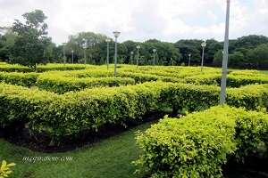
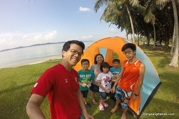

Pasir Ris Park is the perfect place for a day of relaxing, wandering, and discovery for everyone from all walks of life. The Park is 6 km long and has a unique narrow beach, a distinctive mangrove swamp, a cool playground, an array of wildlife and plenty of activities to keep you occupied. Explore around the page for more information!
Tucked away in the Pasir Ris Park is an enormous mangrove swamp and forest, currently the only conserved one in Singapore other than Sungei Buloh. Spanning six hectares, the mangrove swamp is home to a variety of plant and animal species. Keep your eyes peeled for mudskippers, monitor lizards, hermit crabs, white heron birds, and more! For a closer look at the different types of birds, head up to the three-storey high Bird Watching Tower.
Volunteer
Help enhance habitat for butterflies and birds or get involved in planting and maintaining a wide array of vegetables, herbs and spices in our Kitchen Garden.
Anyone from age three and above are welcome to meet the horses and ponies at the stable, feed them, and yes, ride them! Horse and pony rides are available at an affordable fee of $10 per ride. You can extend the fun by signing up for regular lessons too, without the hassle of membership fees.
As the park is situated close to the sea, there are a number of water sports that visitors can engage in. Those who enjoy water sports may want to try their hand at this.
Cycling is an activity that many visitors of Pasir Ris Park enjoy. Come with your own bicycle or rent one from bicycle kiosks found around the park. Don't fancy cycling? Come down with your own skates and enjoy inline skating around the park!
Family Time
Pasir Ris Park playground
Got little tots? Pasir Ris Park is a sure hit with your little ones as it is a treasure trove of outdoor adventures in a tranquil nature by the sea. Buzzing at the heart of the park is the massive playground, one of the largest in our nation. After undergoing a major renovation in 2014, the playground offers even more fun – long and twisting slides, various types of swings, an inclusive merry-go-round, mini mazes and rope tunnels, climbing walls… your little ones as well as your inner child will have a blast! Play also gets creative at the different zones designed to galactic, musical, transport, and more themes.

Get lost in the Maze Garden
The Maze Garden makes an interesting place for everyone. Get lost and test your navigational skills without any assistance of Google Maps while trying to find your way out of the maze. The idea of getting into dead ends, having to find your own way, and getting lost is somewhat exhilarating and exciting to both adults and kids. It’s a fun and different way to spend some time with your loved ones.

Camping under the stars or Picnic by the coast
Spend the night (or a few nights) out by camping in the park. There are designated areas within Pasir Ris Park where you can set up a tent and spend the night. To do so, you need to apply for a camping permit first. If camping is not your thing, the park has beautiful spots for you and your family to picnic at!